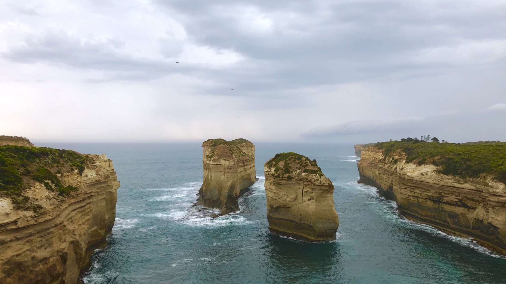
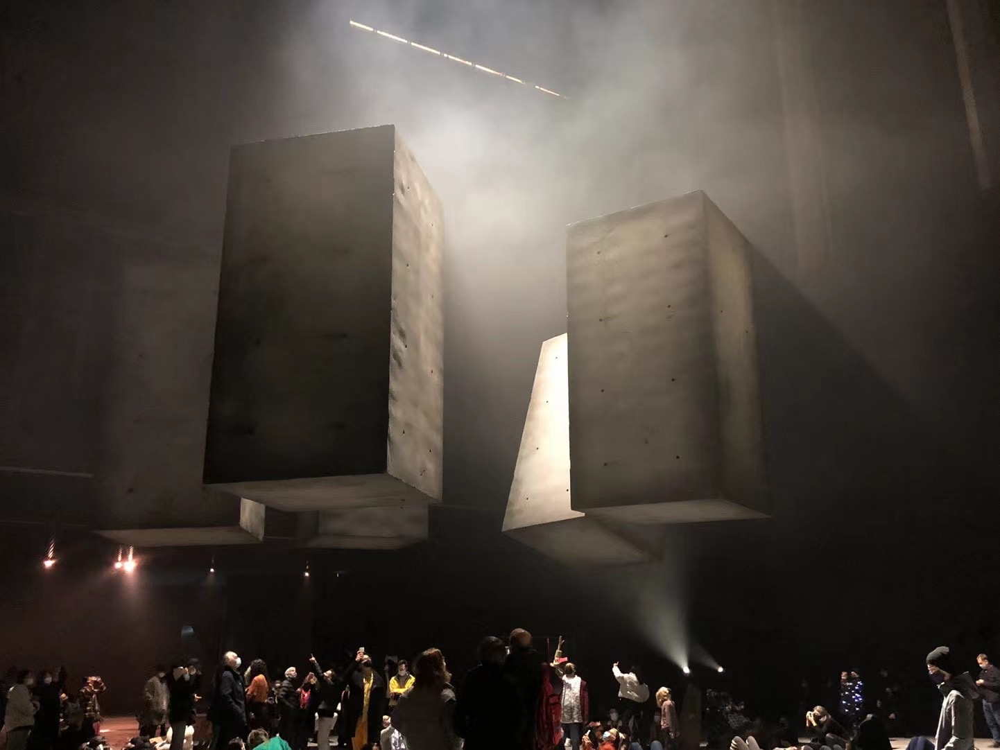
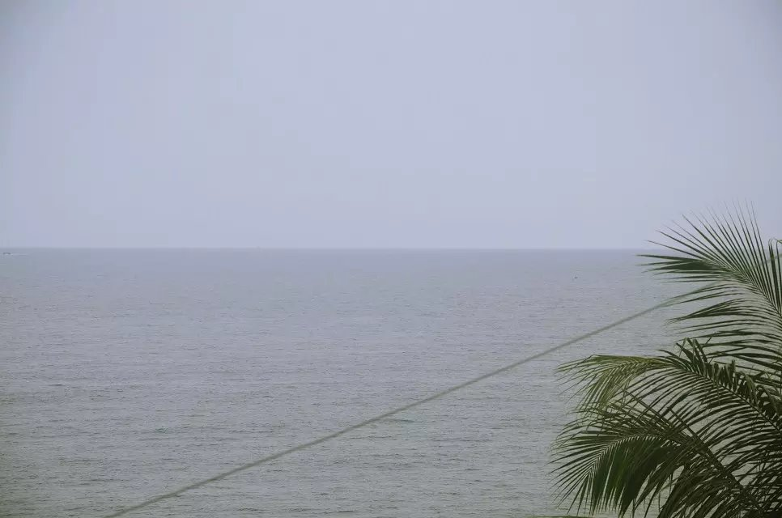

I like taking photos to record pretty scenes and moments. When I look at these photos, I can recall the previous experience and feelings, so I pick up some photos and share them with you.
Besides, if you want to share your stories or photos with me, feel free to contact me! I am a good listener and enjoy listening to others’ stories.
Cactus, San Diego

Facechanging Performance, Chengdu

Getty Center, Los Angeles

The Twelve Apostles, Melbourne
Limestones, Melbourne
Drift, New York City

Night Scene, Singapore
Sea, Puket

Bridge, Seoul